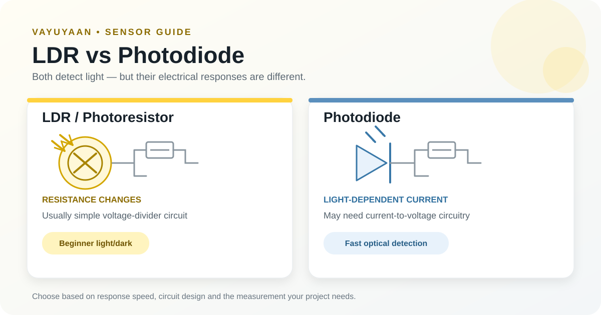
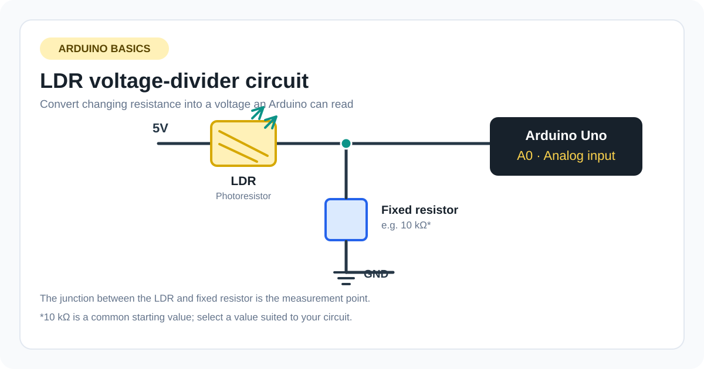
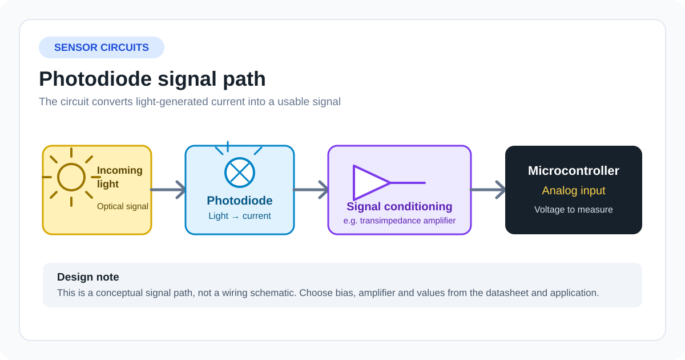

LDR vs Photodiode: Which Light Sensor Should You Choose?

Light sensors help electronic circuits respond to changes in their surroundings. They can switch a lamp on at dusk, measure an interruption in a beam, or provide input for an Arduino project. Two common options are the light-dependent resistor (LDR) and the photodiode.
Both respond to light, but they work differently. An LDR changes its resistance, while a photodiode produces a light-dependent electrical current. That difference affects the circuit you need, response speed, and the kinds of projects each component suits.
If you are new to LDRs, this guide to the ldr full form explains the term and the component’s basic role in electronics.
How an LDR works
An LDR, also called a photoresistor, changes resistance according to the light falling on its photosensitive surface. In common cadmium-sulfide types, resistance generally falls as light increases and rises in darkness.
The LDR does not provide a ready-made digital signal by itself. To read it with a microcontroller, you usually combine it with a fixed resistor to form a voltage divider. The changing voltage at the junction can then be measured by an analog input. If you are new to analog readings, see the Arduino Uno R3 beginner guide for board basics.

This makes an LDR straightforward for beginner projects such as an automatic night lamp or a simple light-level indicator. However, its response is relatively slow compared with a photodiode, and the relationship between resistance and illumination varies by component.
How a photodiode works
A photodiode is a semiconductor device that converts incident light into electrical current. A circuit measures that current, often using a resistor or a more specialised amplifier circuit.
Photodiodes can respond quickly to changes in light. They are useful in applications that need fast detection, such as optical communication receivers, light barriers, encoders, and measurement equipment.
The trade-off is that a photodiode often needs more careful circuit design than a basic LDR. Depending on the application, you may need to consider reverse bias, a transimpedance amplifier, ambient-light filtering, and the sensor’s spectral response.

LDR vs photodiode: key differences
| Feature | LDR (photoresistor) | Photodiode |
|---|---|---|
| Main electrical response | Resistance changes with light | Light produces a current |
| Typical circuit | Voltage divider and analog input | Current-sensing circuit, resistor, or amplifier |
| Response speed | Generally slower | Usually much faster |
| Beginner setup | Often simple | Can require more circuit knowledge |
| Best suited to | Basic light/dark detection and ambient-light response | Fast detection and more controlled optical measurement |
| Calibration | Useful for repeatable thresholds; component variation matters | Depends on circuit, wavelength, device, and measurement needs |
| Arduino use | Read a voltage-divider output | Measure a converted voltage or use a suitable amplifier circuit |
These are general characteristics, not universal specifications. Exact performance depends on the component type, circuit, and operating conditions.
Which sensor is better for an Arduino project?
The right choice depends on what the project must detect.
Choose an LDR when simplicity matters
An LDR is a practical choice when the goal is to tell whether an area is brighter or darker. For example, a small Arduino night-lamp project can read a voltage divider and switch an LED when the reading crosses a threshold.
On an Arduino Uno R3, analogRead() normally returns values from 0 to 1023 for the default 10-bit analog-to-digital conversion. The value represents input voltage, not lux. The reading’s direction depends on how the LDR and fixed resistor are connected.
For reliable switching, take readings in the real installation and choose a threshold between typical dark and bright values. If the output flickers near the switching point, averaging readings or using separate ON and OFF thresholds can help.
Choose a photodiode when speed or controlled detection matters
A photodiode is a better starting point when a project must detect quick light changes or a narrow beam. Examples include counting objects passing through an optical gate, detecting pulses from an infrared emitter, or building a light receiver.
The circuit design matters. A bare photodiode’s current may be small, so a simple voltage measurement may not provide enough sensitivity or stability. Use a circuit appropriate to the photodiode and required signal range, and check the device datasheet before wiring it to a microcontroller.
What about accuracy and measuring lux?
Neither component automatically gives an accurate lux measurement just because it detects light. Lux describes illuminance as perceived by the human eye, while sensor response depends on wavelength and the device’s spectral sensitivity.
An LDR’s resistance also varies between parts and with operating conditions. A threshold-based application may work well without knowing exact lux, but reporting calibrated illuminance requires a defined method and suitable calibration.
If your project needs dependable lux readings, consider a digital ambient-light sensor designed for illuminance measurement. Compare its measurement range, spectral response, interface, and accuracy against your needs.
Common mistakes when choosing a light sensor
Assuming every LDR reading increases with light. The analog value depends on the voltage-divider arrangement. Test your wiring instead of relying on a universal direction.
Treating an ADC value as lux. A reading such as 500 is a digital representation of voltage, not a standard light-intensity unit.
Choosing a photodiode without planning the circuit. The device’s current output may need amplification or conversion before a microcontroller can measure it properly.
Ignoring the environment. Shadows, reflections, the light source’s colour, and sensor placement can all affect the output. Test the sensor in the conditions where it will operate.
Frequently asked questions
Is an LDR the same as a photodiode?
No. An LDR changes resistance with light, while a photodiode produces a light-dependent current. Their circuit requirements and response characteristics differ.
Which is faster, an LDR or a photodiode?
A photodiode is generally much faster. It is usually preferred when a circuit must detect rapid changes or short light pulses.
Can I connect a photodiode directly to an Arduino analog pin?
Not always usefully. A photodiode produces current, so the circuit must convert that current into a measurable voltage. The appropriate arrangement depends on the photodiode and the signal you need to detect.
Is an LDR good for an automatic street-light model?
Yes. An LDR can be suitable for a classroom or hobby prototype that switches an LED or a properly interfaced low-voltage load according to ambient light. A real outdoor lighting system needs appropriate electrical protection, weatherproofing, and a design suitable for its load.
Final recommendation
Choose an LDR for simple, low-cost light/dark detection, especially in beginner Arduino projects. Choose a photodiode when fast response or more controlled optical detection is important and you can design the required signal-conditioning circuit.
For either sensor, confirm the datasheet, test the completed circuit, and calibrate it under the lighting conditions you expect to encounter.
About this guide: This article is published by the Vayuyaan editorial team for electronics learners and makers. Use the diagrams as learning aids, and verify component pinouts and circuit values against the datasheet for the exact part you use.